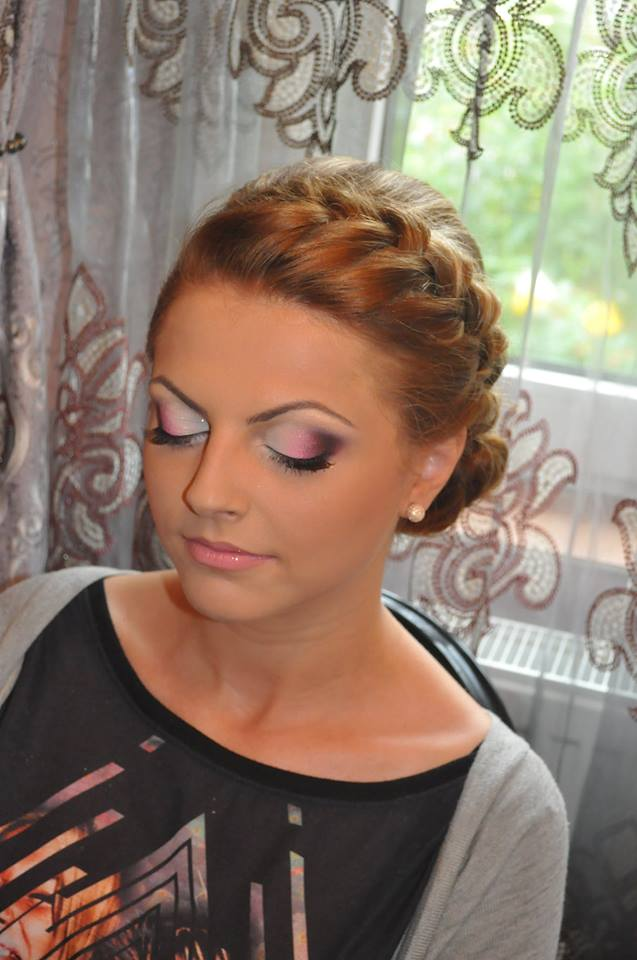
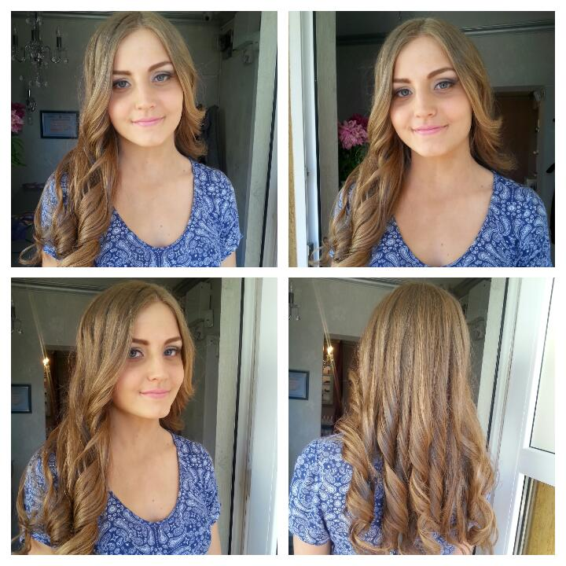
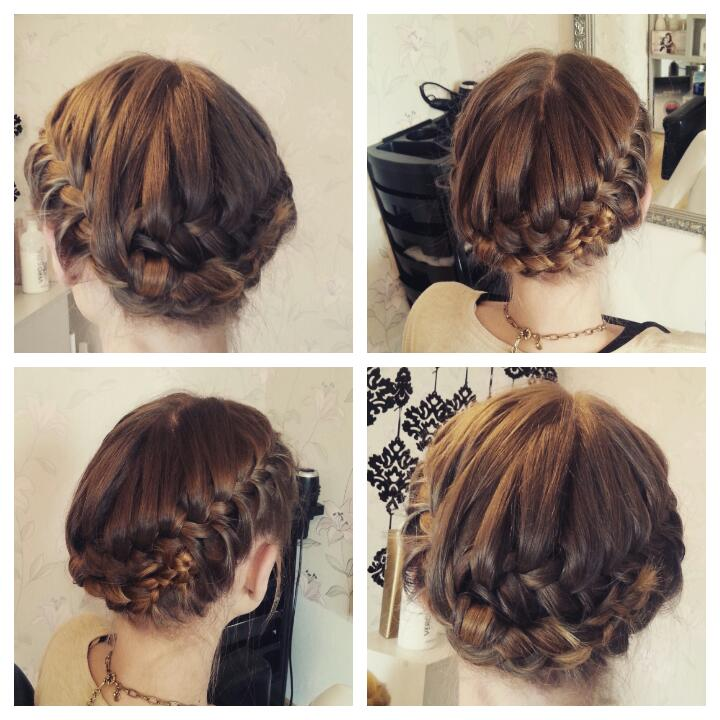
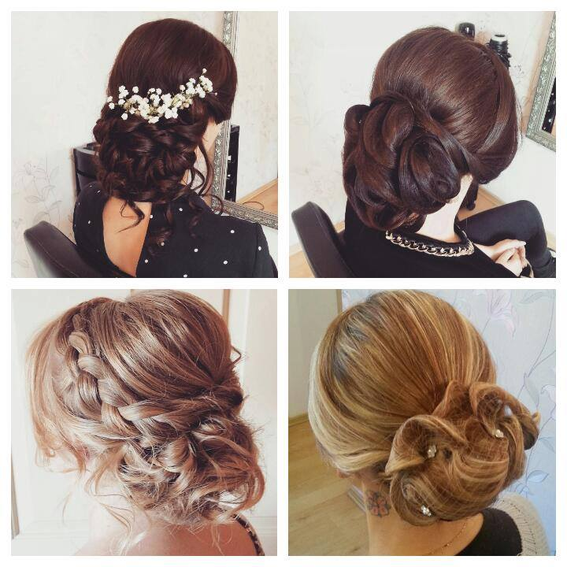
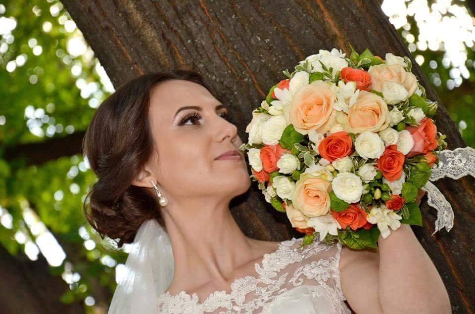

Frumusețea ta, rafinată în fiecare detaliu.
Coafor, manichiură, unghii false, gene fir cu fir și machiaj de mireasă — totul sub un singur acoperiș, pe Strada Vânătorului, în inima Botoșaniului.
Un salon în care intri obosită și pleci strălucitoare.
La Salon Allure credem că felul în care arăți îți dă încredere — și de multe ori chiar buna dispoziție. „Suntem destul de pretențioși când vine vorba de înfățișarea noastră, și suntem îndreptățiți să fim”, spunem noi despre lucrul de aici.
De aceea găsești sub același acoperiș tot ce ai nevoie: coafor, manichiură și pedichiură, unghii false, gene fir cu fir și machiaj — de la o schimbare de look de zi cu zi până la coafura și machiajul din ziua nunții.
Ne găsești pe Strada Vânătorului nr. 1, în Botoșani, de luni până sâmbătă. Programează-te printr-un mesaj pe Facebook și lasă restul în grija noastră.

Tot ce ai nevoie, într-un singur loc
Nu mai trebuie să alergi de la un salon la altul. La Allure faci totul dintr-o singură programare.
Coafor
Tuns, coafat, styling și schimbări de look — pentru păr sănătos și o coafură care ține până la următoarea vizită.
Manichiură & unghii
Manichiură, pedichiură și unghii false, aplicate cu grijă pentru un rezultat curat și de durată.
Gene & machiaj
Gene fir cu fir pentru o privire expresivă și machiaj profesional pentru evenimente sau pentru ziua nunții.
Ce facem la Allure
O listă a serviciilor noastre. Pentru prețuri la zi și disponibilitate, scrie-ne un mesaj pe Facebook.
Coafor
- Tuns damă
- Coafat & styling
- Spălat & aranjat
- Coafură de ocazie
Unghii
- Manichiură
- Pedichiură
- Unghii false (construcție)
- Ojă semipermanentă
Gene & Machiaj
- Gene fir cu fir
- Machiaj de zi
- Machiaj de seară / eveniment
Pachet Mireasă
- Coafură de mireasă
- Machiaj de mireasă
- Probă înainte de eveniment
Prețurile variază în funcție de lungimea părului și de serviciile alese. Cere oferta actuală printr-un mesaj pe Facebook.
Lucrări reale din salon
Coafuri și machiaje realizate la Salon Allure. Mai multe vezi pe pagina noastră de Facebook.

Styling
Coafat
Look complet
Machiaj de evenimentApreciat de botoșănence
Peste 2.500 de aprecieri și sute de clienți care ne trec pragul pe pagina noastră de Facebook.
Coafor, unghii, gene și machiaj — tot ce am nevoie într-un singur loc, cu multă grijă la detalii.
Ne place să lucrăm corect, până la ultimul detaliu — pentru că înfățișarea contează.
Coafură și machiaj de mireasă, cu probă înainte, pentru ca ziua cea mare să fie perfectă.